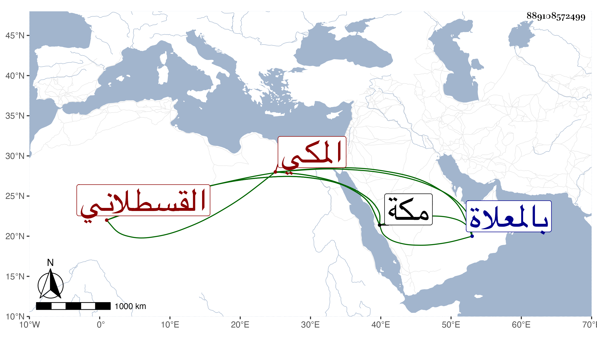

0902Sakhawi.DawLamic.ITO20230111-ara1.EIS1600.889108572499
Biography ID: 889108572499
329
أحمد بن أبي الخير محمد بن حسين بن الزين محمد بن الأمير محمد بن القطب محمد بن أبي العباس الشهاب أبو العباس القسطلاني المكي . سمع بها من العفيف النشاوري وغيره وأجاز له في سنة سبعين جماعة واشتغل قليلا وجود الكتابة وصار يكتب الوثائق ويسجل على الحكام مع تأديبه الأبناء بالمسجد الحرام تحت منارة باب علي . مات في العشر الأخير من شوال سنة ثلاث بمكة ودفن بالمعلاة . ذكره الفاسي في مكة .
